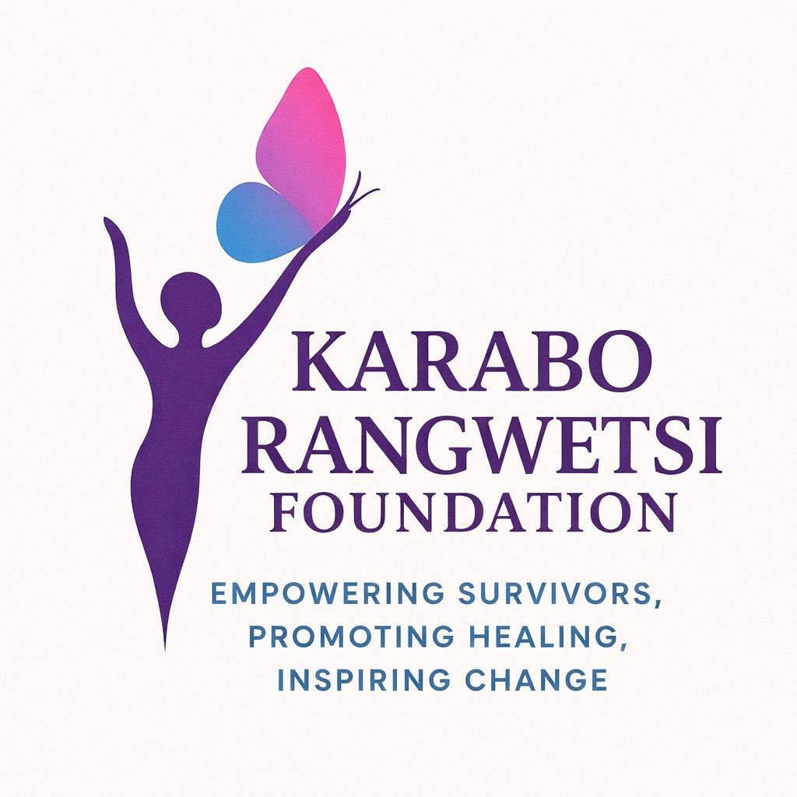
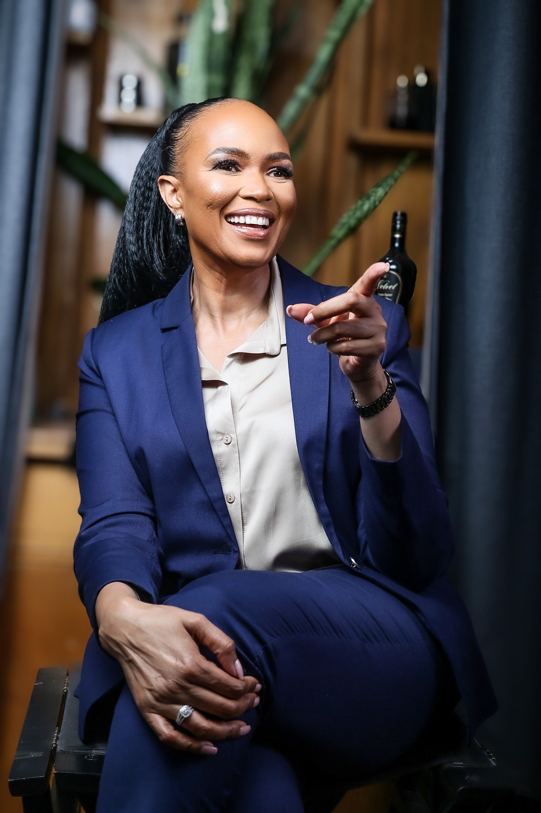

Empowering Survivors • Promoting Healing • Inspiring Change
The Karabo Rangwetsi Foundation (KRF) is a South African Non-Profit Organisation established to provide structured, professional and sustainable support services to victims and survivors of abuse and sexual violence.
To create a safe and supportive society where victims and survivors of abuse and sexual violence are empowered to rebuild their lives with dignity, security and meaningful opportunity.
KRF’s mission is to empower victims and survivors of abuse and sexual violence through professional support services, advocacy and meaningful community engagement. The foundation is committed to fostering hope, restoring dignity, building resilience and supporting victims and survivors on their journey towards long-term healing and recovery.
Trauma-informed counselling services supporting recovery and wellbeing.
Helping survivors understand their rights and access justice.
Programs rebuilding independence, dignity and empowerment.
Outreach initiatives promoting safer communities.
There are many ways you can support the Karabo Rangwetsi Foundation in empowering victims and survivors of abuse and creating safer communities.

Karabo Rangwetsi is a seasoned broadcaster with nearly 30 years of experience in television
and radio. Her journey in broadcasting began in 1997 with the Bophuthatswana Broadcasting
Corporation as a young Reporter driven by curiosity and passion. In 1999, she joined South
Africa’s public broadcaster, the SABC as a News Writer during the general elections – a
temporary assignment that turned into a lifelong career. That same year, she helped pioneer
Vodacom Newsbreak, South Africa’s first cellphone news service, as both Compiler and
Presenter.
Karabo later moved to SABC Africa, an international television channel, serving as a News
Producer and Presenter between 2000 and 2002, before joining Channel Africa, the SABC’s
international radio station. Over the next two decades, she steadily rose through the ranks: from
Senior Producer to Executive Producer for Current Affairs, and later for News and the Channel
Africa website.
Between 2019 and 2021, Karabo took on a senior leadership role at Channel Africa as Acting
Programme Manager before officially becoming Programme Manager in 2021. Between 2022
and 2025, she held a position of Acting Business Manager, while still occupying her office as
Programme Manager. After almost three decades of service to the public broadcaster, Karabo
resigned in January 2025 to pursue her personal mission – to help others heal, grow and live with
purpose.
Beyond the newsroom, Karabo is a tireless humanitarian. She dedicates her time to charity
work, motivational speaking and mentorship. She is passionate about offering emotional support to the
victims and survivors of any kind of abuse, regardless of their gender.
Her message to them is simple but powerful: “You can rewrite your story – no matter how it began.”
Having triumphed over multiple rapes, years of multiple abuses and surviving breast cancer twice in four
years, Karabo calls herself not a survivor, but an overcomer. Her story is a testament to the
resilience of humans and the transformative power of faith.
We collaborate with organisations aligned with Corporate Social Investment (CSI) and Environmental, Social and Governance (ESG) goals to deliver measurable social impact across South Africa.
Your support enables counselling, legal awareness and empowerment programs.
Email: karaborangwetsifoundation@gmail.com
Phone: +27 83 596 0882
Or fill out the form below